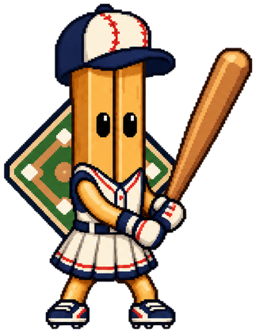
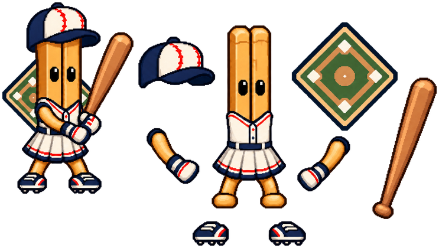
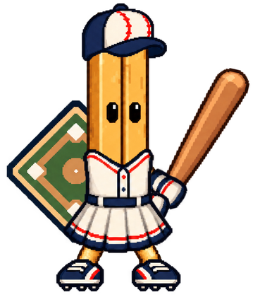
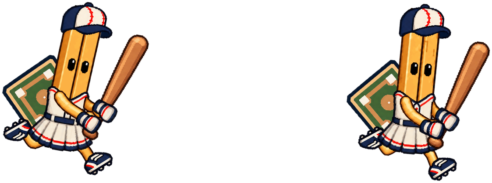

HANJJAK | EQUIPMENT PIPELINE
한짝 장비 착용 파이프라인
웹 방치형 게임 한짝에서 젓가락 캐릭터에 장비를 입히던 작업 흐름입니다. 기본 몸은 절대 바꾸지 않고 장비만 다루도록 단계를 나눴고, 이 흐름으로 치장 28세트 190종을 만들었습니다.
다섯 단계
주황색 칸이 제가 직접 하는 단계입니다. 나머지는 생성 AI와 직접 만든 도구가 합니다.
1장비 디자인

2파츠 시트

3직접 배치사람

4모션 적용

5검수와 보정사람
자동 결과를 보고 어긋난 위치를 제가 고칩니다.
고친 기록은 규칙이 되어 다음 4단계에 들어갑니다.
확정한 그림은 다시 만들지 않습니다.고친 기록은 규칙이 되어 다음 4단계에 들어갑니다.
단계 그림 예시: 야구 선수 세트
자동 결과와 제가 고친 결과
구미호 세트로 비교합니다. 이 세트는 규칙을 만들 때 쓰지 않은 새 세트라, 규칙이 처음 보는 세트에도 통하는지 확인하는 용도였습니다.
자동 (규칙 전)4단계 그대로
자동 (규칙 후)제 보정 기록을 반영
제가 고친 결과5단계 확정본
1 / 4
겹쳐서 보기
가운데 선을 옆으로 밀면 같은 프레임의 자동 결과(왼쪽)와 제가 고친 결과(오른쪽)를 맞대어 볼 수 있습니다. 신발, 소매, 옷자락이 어디서 달라지는지 보세요.
위 동작 고르기와 프레임 이동이 여기에도 같이 적용됩니다.
어디까지 자동이고, 어디부터 사람인가
765쌍
9세트에서 자동 결과와 제가 고친 결과를 한 쌍씩 맞대어 비교했습니다.
2개 규칙
신발은 뒤집은 뒤 회전, 먼 쪽 소매는 지우기. 비교에서 뽑아 4단계에 넣었습니다.
16 / 104
구미호 세트 장비 조각 104개 중 16개가 규칙으로 좋아졌고, 2개는 나빠졌습니다.
아직 완벽하지 않습니다. 의상, 모자, 무기는 자동으로도 거의 맞지만, 신발과 장갑은 세트마다 모양이 달라 지금도 제가 직접 고칩니다. 그래서 4단계 결과는 완성본이 아니라 고치기 쉬운 초안으로 보고, 마지막 확인은 사람이 하도록 단계를 짰습니다.